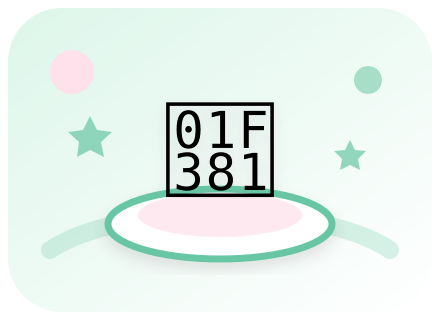

안녕! 나는 모찌야
오늘은 어떤 맛있는 걸 먹을까?
어떤 메뉴가 좋아?

오늘의 행운 메뉴
뭘 먹을까?
버튼을 누르면 맛있는 메뉴가 짠!
나의 맛있는 기록
📒 메뉴 도감
0 / 24 발견0%
내 스티커
음식 친구들
꼬마 요리사
홈에서 메뉴를 뽑고
‘함께 만들어보기’를 눌러줘!
보호자와 함께해요
꼬마 요리사
🛒 재료와 요리 정보 보기
1 / 3 단계
먼저 손을 깨끗이 씻어요.
나만의 맛있는 공간
✏️ 나의 메뉴
나의 요리 친구
좋아하는 테마
🎵 소리 설정
버튼을 누른 뒤부터 소리가 시작돼요. 언제든 모두 끌 수 있어요.
작은 딸기 카페의 오후 · 84 BPM
내가 만든 메뉴
0개저장 데이터 관리
좋아요, 도감, 내 메뉴를 이 기기에만 안전하게 저장해요. 개인정보는 모으지 않아요.